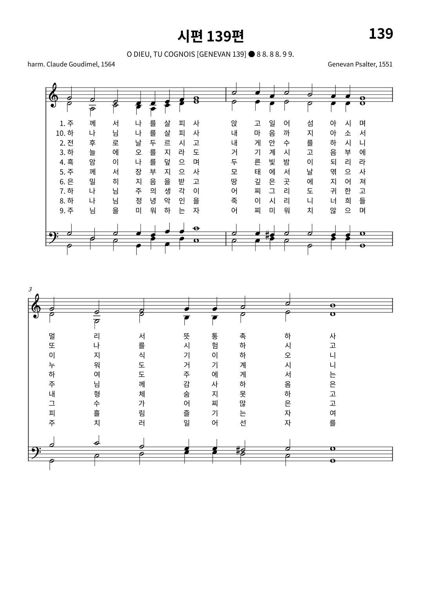
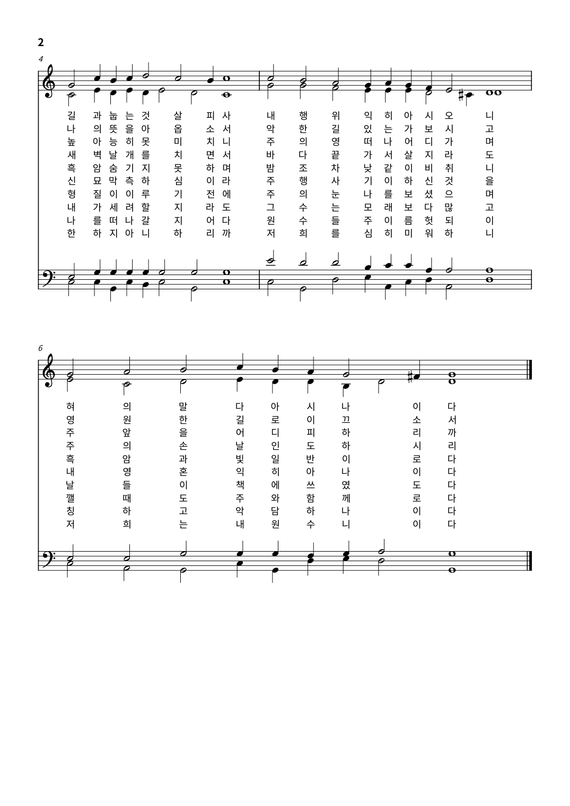

시편 139편
O DIEU, TU COGNOIS [GENEVAN 139] · 8 8. 8 8. 9 9.
곡조: Genevan Psalter, 1551 · 화성: Claude Goudimel, 1564 · 가사: 개역한글판 시편 139편 편역(AI 초벌 편역판 · 신학 감수 전) · 10절
악보 PDF MusicXML(출력용) MusicXML(반주용, 전주·반복 포함) 개역한글 시편 139편 읽기
악보


가사
1절
주께서 나를 살피사
앉고 일어섬 아시며
멀리서 뜻 통촉하사
길과 눕는 것 살피사
내 행위 익히 아시오니
혀의 말 다 아시나이다
주께서 나를 살피사
앉고 일어섬 아시며
멀리서 뜻 통촉하사
길과 눕는 것 살피사
내 행위 익히 아시오니
혀의 말 다 아시나이다
2절
전후로 날 두르시고
내게 안수를 하시니
이 지식 기이하오니
높아 능히 못 미치니
주의 영 떠나 어디 가며
주 앞을 어디 피하리까
전후로 날 두르시고
내게 안수를 하시니
이 지식 기이하오니
높아 능히 못 미치니
주의 영 떠나 어디 가며
주 앞을 어디 피하리까
3절
하늘에 오를지라도
거기 계시고 음부에
누워도 거기 계시니
새벽 날개를 치면서
바다 끝 가서 살지라도
주의 손 날 인도하시리
하늘에 오를지라도
거기 계시고 음부에
누워도 거기 계시니
새벽 날개를 치면서
바다 끝 가서 살지라도
주의 손 날 인도하시리
4절
흑암이 나를 덮으며
두른 빛 밤이 되리라
하여도 주에게서는
흑암 숨기지 못하며
밤조차 낮같이 비취니
흑암과 빛 일반이로다
흑암이 나를 덮으며
두른 빛 밤이 되리라
하여도 주에게서는
흑암 숨기지 못하며
밤조차 낮같이 비취니
흑암과 빛 일반이로다
5절
주께서 장부 지으사
모태에서 날 엮으사
주님께 감사하옴은
신묘막측하심이라
주 행사 기이하신 것을
내 영혼 익히 아나이다
주께서 장부 지으사
모태에서 날 엮으사
주님께 감사하옴은
신묘막측하심이라
주 행사 기이하신 것을
내 영혼 익히 아나이다
6절
은밀히 지음을 받고
땅 깊은 곳에 지어져
내 형체 숨지 못하고
형질이 이루기 전에
주의 눈 나를 보셨으며
날들이 책에 쓰였도다
은밀히 지음을 받고
땅 깊은 곳에 지어져
내 형체 숨지 못하고
형질이 이루기 전에
주의 눈 나를 보셨으며
날들이 책에 쓰였도다
7절
하나님 주의 생각이
어찌 그리도 귀한고
그 수가 어찌 많은고
내가 세려 할지라도
그 수는 모래보다 많고
깰 때도 주와 함께로다
하나님 주의 생각이
어찌 그리도 귀한고
그 수가 어찌 많은고
내가 세려 할지라도
그 수는 모래보다 많고
깰 때도 주와 함께로다
8절
하나님 정녕 악인을
죽이시리니 너희들
피 흘림 즐기는 자여
나를 떠나갈지어다
원수들 주 이름 헛되이
칭하고 악담하나이다
하나님 정녕 악인을
죽이시리니 너희들
피 흘림 즐기는 자여
나를 떠나갈지어다
원수들 주 이름 헛되이
칭하고 악담하나이다
9절
주님을 미워하는 자
어찌 미워치 않으며
주 치러 일어선 자를
한하지 아니하리까
저희를 심히 미워하니
저희는 내 원수니이다
주님을 미워하는 자
어찌 미워치 않으며
주 치러 일어선 자를
한하지 아니하리까
저희를 심히 미워하니
저희는 내 원수니이다
10절
하나님 나를 살피사
내 마음까지 아소서
또 나를 시험하시고
나의 뜻을 아옵소서
악한 길 있는가 보시고
영원한 길로 이끄소서
하나님 나를 살피사
내 마음까지 아소서
또 나를 시험하시고
나의 뜻을 아옵소서
악한 길 있는가 보시고
영원한 길로 이끄소서